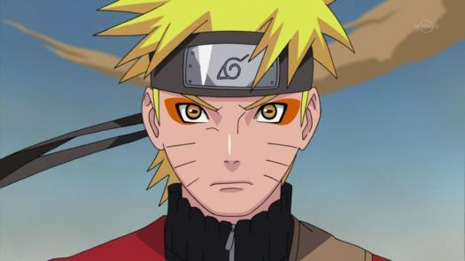

Naruto

Naruto Uzumaki (うずまきナルト Uzumaki Naruto) é um personagem fictício e protagonista da série de mangá e anime Naruto, criado por Masashi Kishimoto. Atualmente, ele é o Sétimo Hokage da Vila Oculta da Folha do País do Fogo. Os aldeões desprezavam Naruto por causa da Raposa de Nove Caudas, uma criatura maléfica que atacou sua vila e que está selada em seu corpo. Para ser reconhecido, ele sonha em se tornar o líder da aldeia, o Hokage. Sua personalidade alegre e brincalhona lhe permite fazer facilmente amizade com outros ninjas de sua aldeia, bem como outros ninjas de outras aldeias. Naruto aparece nos filmes da série e em mídias relacionadas com a franquia, incluindo jogos eletrônicos e OVAs.
Ao criar Naruto na parte inicial da série, Kishimoto manteve o personagem "simples e estúpido", dando-lhe atributos de um herói ideal. Kishimoto adicionou um duro passado para lhe dar um lado mais obscuro. Ele revisou o design inicial do personagem várias vezes, dando a ele roupas diferentes para cativar o público ocidental e para que ele ficasse mais fácil de ser desenhado e reconhecido. Kishimoto mudou sua aparência para a Parte II do enredo, que começa dois anos e meio após a Parte I. Naruto é dublado por Junko Takeuchi na série animada original e Úrsula Bezerra na adaptação brasileira e Alexandra Sedas na adaptação portuguesa.
Revistas especializadas de anime e mangá elogiaram o personagem. Embora alguns o vissem como um protagonista estereotipado de anime e mangá comparável a os outros personagens shōnen, eles elogiaram a sua personalidade e o seu desenvolvimento na história, em que ele evita estereótipos. Naruto tornou-se popular com os fãs da série, ficando entre os personagens mais populares nas pesquisas de opinião. Devido a isso, diversas mídias baseadas no personagem são lançadas, como figuras de ação e chaveiros.